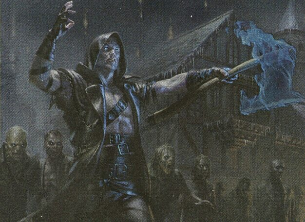
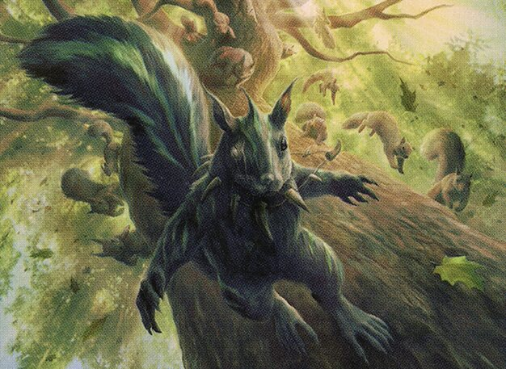

The Ur-Dragon
Stark
Das Deck gewinnt 37 % seiner Partien – der Schnitt am Vierertisch liegt bei 25 %.
- Stufe · Elo
- A 1657 Platz 10 von 64 in der Rangliste bis 100 €
- Siegquote
- 37 % 187 Siege in 508 Partien, mit 90 % Sicherheit zwischen 33 und 40 %
- Platzierungen
- 120 %8×
- 228 %11×
- 328 %11×
- 425 %10×
Dort ein neues Deck anlegen und die Liste beim Import einfügen.
- Preis
- 97,25 €von 100,00 €
- Partien
- 512in 51 Turnieren, 4 am Zeitlimit nicht gewertet
- Karten
- 10035 Länder, davon 9 Standard
- Game Changer
- 0höchstens 3 erlaubt
- Kombos
- 0komplett im Deck
- Regelcheck
- Bestanden100 Karten, Farben, Bannliste
Höchstens 100 € inklusive Commander. Steigen die Preise darüber, wird die Kaufliste automatisch neu gebaut.
Die Kaufliste wurde am 12.11.2026 mit aktuellen Preisen neu gebaut: Die getestete Fassung kostete inzwischen 100,30 € und lag damit über 100,00 €. Siegquote und Platzierung stammen von der getesteten Fassung.
Stärken und Schwächen
Aus 498 ausgewerteten Partien in 50 Turnieren (mit den Listen, die im Turnier gespielt wurden). Partien am Zeitlimit zählen wie in der Rangliste nicht. Werte in Klammern: Schnitt aller Decks derselben Preisklasse. Die genauen Zahlen siehst du, wenn du mit der Maus auf einen Punkt zeigst oder ihn antippst.
Spielweise: gewinnt über den Kampf – 88 % des Schadens an Gegnern ist Kampfschaden · So gewinnt es: 16 % der Siege durch Überleben – die Gegner schalteten sich gegenseitig aus (Schnitt aller Decks: 31 %)
Stärken
- Macht viel Druck sicherØ 43 Schaden an Gegnern je Partie (Schnitt aller Decks: 31) · 498 Partien
- Kommt mit Angriffen gut durch sicher12 % der Angreifer geblockt (Schnitt aller Decks: 19 %) · 4734 Angreifer in 451 Partien
- Räumt den Tisch ab sicherschaltet im Schnitt 1,00 Gegner je Partie aus (Schnitt aller Decks: 0,63) · 498 Partien
- Gewinnt schnell sicherSiege im Schnitt schon im 11. eigenen Zug (Schnitt aller Decks: 12.) · 182 Siege
Schwächen
- Abhängig vom Commander Hinweisohne ihn nur 13 % Siege, mit ihm 51 % · 190 Partien ohne, 308 mit Commander
- Tut sich schwer gegen Flieger Hinweis18 % Siege wenn mindestens 40 % der gegnerischen Kreaturen fliegen oder Reichweite haben, 47 % bei höchstens 15 % (Schnitt aller Decks: 19 % zu 27 %) · 88 / 200 Partien
- Anfällig für direkten Schaden sichernur 49 % der Niederlagen durch Kampf, der Rest durch Zauber, Entzug oder Fähigkeiten (Schnitt aller Decks: 63 % Kampf) · 154 von 316 Niederlagen
Gegen wen es gewinnt
Siegquote an Tischen, an denen dieser Commander mitspielte – nur Gegner aus der aktuellen Rangliste mit mindestens 20 gemeinsamen Partien. Am Vierertisch liegt der Schnitt bei 25 %.
Gewinnt oft gegen

62 %von 24
50 %von 22 49 %von 37
49 %von 37
Tut sich schwer gegen
 18 %von 44
18 %von 44 19 %von 53
19 %von 53 22 %von 37
22 %von 37
Mit einem anderen Commander vergleichen
Commander (1)
- The Ur-Dragon31,25 €
Kreaturen (35)
- Miirym, Sentinel Wyrm4,87 €
- Hellkite Courser4,27 €
- Birds of Paradise Ramp3,00 €
- Dragonlord Dromoka2,16 €
- Scourge of Valkas Removal1,92 €
- Rith, Liberated Primeval1,75 €
- Dragonspeaker Shaman1,38 €
- Smaug, Wicked Worm Kartenziehen1,32 €
- Ignoble Hierarch Ramp1,23 €
- Sarkhan, Soul Aflame1,08 €
- Rivaz of the Claw Ramp0,84 €
- Bladewing the Risen0,74 €
- Scavenger Regent // Exude Toxin Board Wipe0,49 €
- Lathliss, Dragon Queen0,43 €
- Ramos, Dragon Engine Ramp0,43 €
- Savage Ventmaw Ramp0,43 €
- Silumgar, the Drifting Death0,42 €
- Atarka, World Render0,40 €
- Scourge of the Throne0,36 €
- Dragonmaster Outcast0,32 €
- Scaled Nurturer Ramp0,32 €
- Thrakkus the Butcher0,32 €
- Wasitora, Nekoru Queen0,28 €
- Sunscorch Regent0,26 €
- Teneb, the Harvester0,26 €
- Thunderbreak Regent0,26 €
- Intet, the Dreamer0,25 €
- Lozhan, Dragons' Legacy Removal0,20 €
- Steel Hellkite Board Wipe0,19 €
- Korlessa, Scale Singer0,18 €
- Dragonlord's Servant0,15 €
- Deathbringer Regent Board WipeKI schwach0,13 €
- Runescale Stormbrood // Chilling Screech Removal0,12 €
- Jeskai Shrinekeeper Kartenziehen0,07 €
- Whirlwing Stormbrood // Dynamic Soar0,07 €
Spontanzauber (3)
- Swords to Plowshares Removal1,01 €
- Path to Exile Removal1,00 €
- Dispelling Exhale Removal0,06 €
Hexereien (6)
- Nature's Lore Ramp2,29 €
- Farseek RampKI schwach0,59 €
- Crux of Fate Board Wipe0,48 €
- Cultivate Ramp0,25 €
- Painful Truths Kartenziehen0,18 €
- Rampant Growth Ramp0,15 €
Artefakte (10)
- Sol Ring Ramp0,74 €
- Fellwar Stone Ramp0,71 €
- Chromatic Lantern Ramp0,41 €
- Dragon's Hoard Ramp0,37 €
- Arcane Signet Ramp0,36 €
- Firdoch Core Ramp0,23 €
- Carnelian Orb of Dragonkind Ramp0,20 €
- Wayfarer's Bauble Ramp0,17 €
- Dragonstorm Globe Ramp0,08 €
- Commander's Sphere Ramp0,06 €
Verzauberungen (10)
- DracogenesisKI schwach6,12 €
- Rhythm of the Wild3,47 €
- Temur Ascendancy Kartenziehen3,02 €
- Dragon Tempest Removal2,07 €
- Up the Beanstalk Kartenziehen2,06 €
- Call the Spirit DragonsKI schwach1,60 €
- Garruk's Uprising Kartenziehen0,48 €
- Encroaching Dragonstorm Ramp0,16 €
- Breaching Dragonstorm0,09 €
- Roiling Dragonstorm Kartenziehen0,06 €
Länder (35)
- Maelstrom of the Spirit Dragon1,53 €
- Haven of the Spirit DragonKI schwach0,48 €
- Crucible of the Spirit DragonKI kann nicht0,35 €
- Shivan Reef0,30 €
- Arcane Sanctum0,25 €
- Cinder Glade0,24 €
- Secluded Courtyard0,24 €
- Unclaimed Territory0,24 €
- Crumbling Necropolis0,23 €
- Sunken Hollow0,23 €
- Temple of the Dragon Queen0,23 €
- Savage Lands0,22 €
- Seaside Citadel0,22 €
- Smoldering Marsh0,21 €
- Canopy Vista0,20 €
- Exotic Orchard0,19 €
- Frontier Bivouac0,19 €
- Command Tower0,18 €
- Sandsteppe Citadel0,18 €
- Nomad Outpost0,15 €
- Prairie Stream0,15 €
- Mystic Monastery0,13 €
- Path of Ancestry0,12 €
- Ash Barrens0,08 €
- Terramorphic Expanse0,06 €
- Evolving Wilds0,03 €
- 2× Swamp
- 2× Forest
- 3× Mountain
- 1× Island
- 1× Plains
Welche Karten Siege bringen
Aus 498 Partien dieses Decks: Wie oft es gewonnen hat, wenn die Karte in der Partie gespielt wurde – verglichen mit seinem Schnitt von 37 %. Nur Karten, die mindestens 20-mal gespielt wurden. Teure Karten, die spät kommen, sehen oft etwas besser aus, weil man dafür lange genug überleben muss.
| Karte | Partien | Siege, wenn gespielt | gegenüber Schnitt |
|---|---|---|---|
| Call the Spirit Dragons | 32 | 69 % | +32 |
| Sunscorch Regent | 83 | 61 % | +25 |
| Scourge of Valkas | 121 | 61 % | +25 |
| Whirlwing Stormbrood | 29 | 59 % | +22 |
| Scourge of the Throne | 95 | 55 % | +18 |
| Sarkhan, Soul Aflame | 75 | 55 % | +18 |
| Savage Ventmaw | 66 | 55 % | +18 |
| Farseek | 111 | 54 % | +18 |
| Rith, Liberated Primeval | 111 | 52 % | +16 |
| Breaching Dragonstorm | 48 | 52 % | +16 |
Alle 62 Karten zeigen
Upgrade auf bis 200 €
Du hast dieses Deck bis 100 €? Das getestete Deck bis 200 € spielt diese Karten anders – oben die, mit denen es am häufigsten gewinnt.
18 Karten anders · +96,38 € · Platz 10 → Platz 13
- Two-Headed Hellkite +27 % Siege, wenn gespielt9,04 €
- Ureni of the Unwritten +22 % Siege, wenn gespielt16,79 €
- Morophon, the Boundless +18 % Siege, wenn gespielt4,33 €
- Counterspell +18 % Siege, wenn gespielt0,97 €
- Three Visits +16 % Siege, wenn gespielt4,88 €
- Scalelord Reckoner +15 % Siege, wenn gespielt1,69 €
- Heroic Intervention +15 % Siege, wenn gespielt8,49 €
- Goldspan Dragon +14 % Siege, wenn gespielt9,47 €
- Herald's Horn +10 % Siege, wenn gespielt3,13 €
- Utvara Hellkite +10 % Siege, wenn gespielt5,32 €
- Assassin's Trophy +10 % Siege, wenn gespielt1,20 €
- Kodama's Reach +6 % Siege, wenn gespielt0,75 €
… und 6 weitere – alle stehen in der Liste zum Kopieren.
Dafür raus (18)
Ash Barrens, Canopy Vista, Commander's Sphere, Dispelling Exhale, Encroaching Dragonstorm, Firdoch Core, Intet, the Dreamer, Jeskai Shrinekeeper, Lozhan, Dragons' Legacy, Painful Truths, Roiling Dragonstorm, Runescale Stormbrood // Chilling Screech, Steel Hellkite, Teneb, the Harvester, Thunderbreak Regent, Wasitora, Nekoru Queen, Wayfarer's Bauble, Whirlwing Stormbrood // Dynamic Soar
Starthand ziehen
Sieben zufällige Karten aus diesem Deck – so siehst du, wie sich der Start anfühlt. Der Commander liegt wie im Spiel nicht im Stapel.
Die Partien in Zahlen
- Commander gewirkt
- 100 %der Partien, in 0 % bis zum 4. Zug
- Schaden je Partie
- 43Schnitt: 31
- Siege im Schnitt
- Zug 11,2eigener Zug, Schnitt: 12,2
- Als Erstes ausgeschieden
- 25 %126 von 498 Partien, Schnitt: 25 %
- Zu wenig Länder
- 12 %der Partien, davon 14 gewonnen, Schnitt: 9 %
- Mulligans
- 7 %34 in 498 Partien, Schnitt: 6 %
Karten mit messbarem Einfluss
Ein Zusammenhang, kein Beweis: Diese Karten kamen in Siegen deutlich öfter ins Spiel.
- The Ur-Dragon – gewonnen in 51 % der Partien, in denen sie gewirkt wurde (308), sonst 13 %
- Scourge of Valkas – gewonnen in 61 % der Partien, in denen sie gewirkt wurde (121), sonst 29 %
- Sunscorch Regent – gewonnen in 61 % der Partien, in denen sie gewirkt wurde (83), sonst 32 %
Was die Partien zeigen
Aus 498 ausgewerteten Partien in 50 Turnieren (mit den Listen, die im Turnier gespielt wurden). Partien am Zeitlimit zählen wie in der Rangliste nicht. Werte in Klammern: Schnitt aller Decks derselben Preisklasse. „sicher“: steht so im Spielprotokoll. „Hinweis“: kommt immer wieder vor, ist aber kein Beweis.
Schaden pro Partie alle Partien
Schaden an Gegnern pro Partie, gerechnet über alle 498 Partien – was die Karte insgesamt beiträgt
- The Ur-Dragon Ø 8,3traf in 187 von 498 Partien
- Dragon Token Ø 1,9traf in 59 von 498 Partien
- Sunscorch Regent Ø 1,7traf in 46 von 498 Partien
Schaden bei Einsatz wenn sie trifft
Gesamtschaden ÷ Partien, in denen die Karte Schaden gemacht hat – ihre Stärke im Einsatz
- The Ur-Dragon Ø 22,2traf in 187 von 498 Partien
- Sunscorch Regent Ø 18,5traf in 46 von 498 Partien
- Atarka, World Render Ø 17,0traf in 44 von 498 Partien
Top-Finisher schaltet Gegner aus
Karten, die am häufigsten einen gegnerischen Commander aus der Partie genommen haben
- The Ur-Dragon 147×498 Partien im Deck
- Dragon Token 70×498 Partien im Deck
- Scourge of Valkas 26×498 Partien im Deck
Beste Interaktion räumt auf
Gegnerkarten, die beim Auflösen dieser Karte zerstört, verbannt, zurückgeschickt oder neutralisiert wurden (ohne Spielsteine)
- Crux of Fate 456×Ø 0,9 pro Partie · 498 Partien im Deck
- Silumgar, the Drifting Death 158×Ø 0,3 pro Partie · 498 Partien im Deck
- Deathbringer Regent 126×Ø 0,3 pro Partie · 498 Partien im Deck
Größte Hindernisse blockt am meisten
Gegnerische Karten, die die Angreifer dieses Decks am häufigsten geblockt haben – insgesamt 12 % der 4734 Angreifer geblockt, davon 38 % durch Flieger oder Reichweite
- Plant Token 19×blockte in 4 Partien
- Thopter Token 12×blockte in 4 Partien
- Goblin Token 12×blockte in 3 Partien
Selten gewirkt Kandidaten zum Tauschen
Karten dieser Liste, die in ihren Partien am seltensten gewirkt wurden – oft zu teuer oder zu langsam (Länder ausgenommen)
- Painful Truths 0 %gewirkt in 0 von 10 Partien
- Dracogenesis 5 %gewirkt in 6 von 111 Partien
- Call the Spirit Dragons 6 %gewirkt in 32 von 498 Partien
Siege nach Zug Tempo
In welchem eigenen Zug die 182 Siege kamen
- bis Zug 71 %
- Zug 8–918 %
- Zug 10–1142 %
- Zug 12–1327 %
- ab Zug 1412 %
Elo-Verlauf
Elo nach jedem Turnier, älteste links. Gestrichelt: Stufengrenzen S, A, B, C.
Jetzt 1657, am höchsten 1682 (15.11.), am niedrigsten 1629 – aus 51 Turnieren.
Letzte Partien
Platz in jeder Partie zu viert, älteste links: Gold = Sieg, Silber = 2, Bronze = 3, rot = 4, Ring = Remis.
2443133332323231412313444314441222212124In den letzten 40 Partien 8× Sieg, 11× Platz 2, 11× Platz 3 und 10× Platz 4.
Manakurve ohne Länder
Durchschnitt 3,81
Aufgaben im Deck
Anzahl / Richtwert aus dem EDHREC-Durchschnittsdeck (der Strich), rot heißt deutlich darunter. Strategie: die übrigen Karten ohne eine dieser Aufgaben, etwa die Kreaturen und Effekte, um die sich das Deck dreht. Zusammen 64 Karten ohne Länder.
Kartentypen
- Kreaturen35 %35
- Spontanzauber3 %3
- Hexereien6 %6
- Artefakte10 %10
- Verzauberungen10 %10
- Länder35 %35
Teuerste Karten
Was das Programm gelernt hat
In jedem Turnier testet das Deck eine Karte. Ein Urteil gibt es erst ab 40 Partien mit und ohne die Karte. Weil das Deck jedes Turnier mit aktuellen Preisen und Daten neu gebaut wird, können getestete Karten später wieder herausfallen.
- kein klarer Unterschied Thunderbreak Regent statt Crucible of Fire · Siegquote 38 % mit, 28 % ohne (468 / 40 Partien)
- kein klarer Unterschied Teneb, the Harvester statt Thunderbreak Regent · Siegquote 36 % mit, 43 % ohne (438 / 70 Partien)
- kein klarer Unterschied Lozhan, Dragons' Legacy statt Drakuseth, Maw of Flames · Siegquote 39 % mit, 33 % ohne (350 / 158 Partien)
- kein klarer Unterschied Runescale Stormbrood // Chilling Screech statt Dispelling Exhale · Siegquote 39 % mit, 34 % ohne (309 / 199 Partien)
- kein klarer Unterschied Dromoka, the Eternal statt Thunderbreak Regent · Siegquote 35 % mit, 38 % ohne (238 / 270 Partien)
- kein klarer Unterschied Sagu Wildling // Roost Seek statt Dromoka, the Eternal · Siegquote 35 % mit, 37 % ohne (88 / 420 Partien) · aus einer früheren Fassung, heute nicht im Deck
- kein klarer Unterschied Firdoch Core statt Encroaching Dragonstorm · Siegquote 37 % mit, 37 % ohne (289 / 219 Partien)
10 weitere getestete Karten sammeln noch Partien.
Kaufliste für Cardmarket
Liste kopieren, auf Cardmarket unter „Wants“ eine neue Liste anlegen und einfügen.
Zusammen 97,25 € Cardmarket-Durchschnitt vom 24.11.2026
Cardmarket Wants öffnenPreise ohne Versand. Einzelne Karten können bei Cardmarket inzwischen teurer oder günstiger sein.
Gespielt von der Forge-KI, zu viert. Ein durchschnittliches Deck gewinnt 25 %. Wie wird getestet?